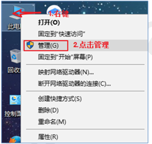
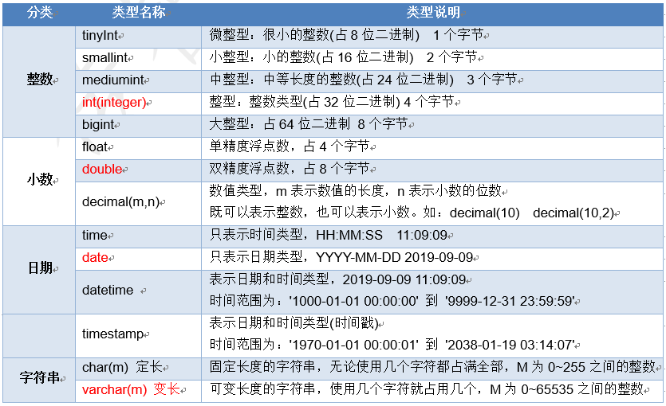
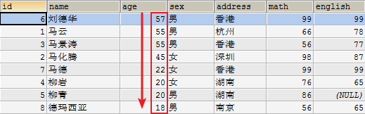

MySQL基础语法
学习目标
- 能够使用SQL语句建库、建表
- 能够使用SQL语句进行数据的添删改查操作
- 能够使用SQL语句进行排序
学习内容
数据库的基本知识
目标
- 学习数据库的概念
- 了解常用的数据库
什么是数据库
存储数据的仓库
数据的存储方式
数据保存在内存
int[] arr = new int[]{1, 2, 3, 4}; ArrayList<Integer>list = new ArrayList<Integer>(); list.add(1); list.add(2);new出来的对象存储在堆中，堆是内存中的一小块空间
优点：内存速度快
缺点：断电/程序退出，数据就清除了，内存价格贵数据保存在普通文件
优点：永久保存
缺点：查找，增加，修改，删除数据比较麻烦，效率低数据保存在数据库
优点：永久保存，通过SQL语句比较方便的操作数据库，数据库是对大量的信息进行管理的高效的解决方案
常见数据库

**Oracle**：收费的大型数据库，Oracle公司的产品。Oracle收购SUN公司，收购MYSQL。
**MySQL**：开源免费的数据库，小型的数据库。已经被Oracle收购了。MySQL6.x版本也开始收费。

DB2 ：IBM公司的数据库产品,收费的。常应用在银行系统中。
SQLServer：MicroSoft 公司收费的中型的数据库。C#、.net等语言常使用。
SyBase：已经淡出历史舞台。提供了一个非常专业数据建模的工具PowerDesigner。
SQLite: 嵌入式的小型数据库，应用在手机端。
常用数据库
MySQL，Oracle
在web应用中，使用的最多的就是MySQL数据库，原因如下：
- 开源、免费
- 功能足够强大，足以应付web应用开发（最高支持千万级别的并发访问）
小结
- 说出数据库的概念：存储数据的仓库
- 说出常用的数据库：MySQL, Oracle
MySQL数据库卸载
目标
了解MySQL数据库卸载
数据库的安装
目标
学习MySQL数据库软件的安装
讲解
安装过程：
文件复制的过程，解压文件到指定的目录下
服务器的配置
端口号是：3306
管理员名字叫：root
可以远程访问：
小结
MySQL安装过程的两个步骤：解压复制 配置信息
MySQL端口号是：3306
管理员名字：root
MySQL目录结构
目标
了解MySQL目录结构
│-- bin：mysql相关的可执行文件*.exe
│-- MySQLInstanceConfig.exe mysql的配置程序
│-- data: mysql自带的数据库文件(不用关注)
│-- include: c语言的头文件(不用关注)
│-- lib: 存放mysql使用到的dll动态库(相当于jar包，不用关注)
│-- my.ini mysql的配置文件,配置了mysql的相关信息命令行客户端连接服务器
目标
- 学习启动和关闭mysql服务
- 学习登录mysql
打开和关闭mysql服务(了解)

登录mysql服务器

MySQL是一个需要账户名密码登录的数据库，登陆后使用，它提供了一个默认的root账号，使用安装时设置的密码即可登录
- 登录格式1：在DOS命令行：
mysql -u用户名 -p密码
u和p后面没有空格
例如：
mysql -uroot -proot
后输入密码方式：
mysql -uroot -p回车
下一行输入密码登录格式2：
mysql -hip地址 -u用户名 -p密码
例如：mysql -h127.0.0.1 -uroot -proot
- 退出MySQL：
exit或quit
小结
连接到本机的mysql
mysql -u账号 -p密码连接到指定主机的mysql
mysql -hip地址 -u账号 -p密码
图形界面SQLyog客户端
目标
- 学习SQLyog的安装
- 学习使用SQLyog连接mysql
讲解
SQLyog是业界著名的Webyog公司出品的一款简洁高效、功能强大的图形化MySQL数据库管理工具。使用SQLyog可以快速直观地让您从世界的任何角落通过网络来维护远端的MySQL数据库

- 双击

- 一直下一步，直到出现下面对话框

- 输入名称和秘钥
- 重启SQLyog即可
- 使用SQLyog登录数据库

小结
SQLyog的安装?
一直下一步
使用SQLyog连接mysql?
服务器与数据库、表、记录的关系
目标
学习MySQL服务器与数据库、表、记录的关系
讲解
关系型数据库的核心单元是表,有行有列
小结
MySQL服务器与数据库、表、记录的关系？
MySQL服务器是一个服务端软件,可以管理很多的数据库,一个数据库相当于一个文件夹,一个数据库中可以包含很多表,一张表相当于一个文件,表中可以存储很多的数据,一条数据就称为一条记录
SQL语句的分类和语法
目标
学习SQL的概念和作用
什么是SQL
(Structured Query Language) 结构化查询语言，简称SQL。
SQL作用
通过SQL语句我们可以方便的操作数据库、表、数据。
SQL是数据库管理系统都需要遵循的规范。不同的数据库生产厂商都支持SQL语句，但都有特有内容。
SQL语句分类
- DDL(Data Definition Language) 数据定义语言
用来定义数据库对象：数据库，表，列等。关键字：create，drop，alter等
- DML(Data Manipulation Language) 数据操作语言
用来对数据库中表的数据进行增删改。关键字：insert，delete，update等
- DQL(Data Query Language) 数据查询语言
对数据库进行数据查询，关键字select
DCL(Data Control Language)数据控制语言(了解)
是用来设置或更改数据库用户或角色权限的语句，这个比较少用到
SQL通用语法
SQL语句可以单行或多行书写，以分号结尾。
可使用空格和缩进来增强语句的可读性。
MySQL数据库的SQL语句不区分大小写，关键字建议使用大写。
SELECT * FROM abc;3种注释
单行注释: – 注释
多行注释:/*注释*/
MySQL特有的单行注释：# 注释
小结
SQL的作用？
通过SQL语句可以很方便的操作数据库,表,记录
SQL的分类？
DDL: 数据定义语言 (操作数据库,表) DML: 数据操作语句 (操作数据的增删改) DQL: 数据查询语句 (查询数据)
DDL创建数据库(重要)
目标
学习创建数据库的三种语法
讲解
创建数据库
直接创建数据库
CREATE DATABASE 数据库名;判断是否存在并创建数据库
CREATE DATABASE IF NOT EXISTS 数据库名;创建数据库并指定字符集(编码表)
CREATE DATABASE 数据名 DEFAULT CHARACTER SET 字符集;具体操作：
直接创建数据库db1
CREATE DATABASE db1;
判断是否存在并创建数据库db2
CREATE DATABASE IF NOT EXISTS db2;
创建数据库db3并指定字符集为gbk
CREATE DATABASE db2 CHARACTER SET gbk;
查看数据库
- 查看所有的数据库
SHOW DATABASES;
- 查看某个数据库的定义信息
SHOW CREATE DATABASE 数据名;
小结
创建数据库语法
CREATE DATABASE 数据库名;
查看有哪些数据库
SHOW DATABASES;
DDL修改和删除数据库(重要)
目标
- 学习修改数据库的字符集
- 学习删除数据库
修改数据库字符集
ALTER DATABASE 数据库名 DEFAULT CHARACTER SET 字符集;
ALTER: 表示修改
DATABASE: 数据库具体操作：
将db3数据库的字符集改成utf8
ALTER DATABASE db3 DEFAULT CHARACTER SET utf8;
删除数据库
DROP DATABASE 数据库名;
DROP: 删除具体操作：
删除db2数据库
DROP DATABASE db2;
小结
修改数据库的字符集格式？
ALTER DATABASE 数据库名 DEFAULT CHARACTER SET 新字符集;
删除数据库格式？
DROP DATABASE 数据库名;
DDL使用数据库
目标
- 学习切换数据库语法
- 查看正在使用的数据库
讲解
查看正在使用的数据库
SELECT DATABASE();
使用db1数据库
USE db1;
小结
| DDL语句操作数据库 | 关键字 |
|---|---|
| 创建 | CREATE DATABASE 数据库名; |
| 修改 | ALTER DATABASE 数据库名 DEFAULT CHARACTER SET 字符集; |
| 查看 | SHOW DATABASES; |
| 删除 | DROP DATABASE 数据库名; |
DDL创建表(重要)
目标
学习DDL创建表
前提先使用某个数据库（db1）
创建表
CREATE TABLE 表名 (字段名1 字段类型1, 字段名2 字段类型2);建议写成如下格式：
CREATE TABLE 表名 (
字段名1 字段类型1,
字段名2 字段类型2
);MySQL数据类型
MySQL中的我们常使用的数据类型如下：
详细的数据类型如下(不建议详细阅读！)

具体操作:
创建student表包含id,name,birthday字段
CREATE TABLE student (
id INT,
name VARCHAR(20),
birthday DATE
);小结
创建表语句
CREATE TABLE 表名 ( 字段名1 字段类型1, 字段名2 字段类型2 );
常用数据类型
int: 整数 double: 小数 date: 日期 varchar(length) 可变长度字符串
DDL查看表(重要)
目标
- 学习查看某个数据库中的所有表
- 学习查看表结构
讲解
查看某个数据库中的所有表
SHOW TABLES;查看表结构
DESC 表名;查看创建表的SQL语句
SHOW CREATE TABLE 表名;具体操作：
查看MySQL数据库中的所有表
SHOW TABLES;
查看student表的结构
DESC student;
查看student的创建表SQL语句
SHOW CREATE TABLE student;
小结
查看某个数据库中的所有表
SHOW TABLES;
查看表结构
DESC 表名;
查看创建表的SQL语句
SHOW CREATE TABLE 表名;
DDL删除表(重要)
目标
- 学习删除表语法
- 学习快速创建一个表结构相同的表
讲解
快速创建一个表结构相同的表(复制表)
CREATE TABLE 表名 LIKE 其他表;具体操作：
创建s1表，s1表结构和student表结构相同
CREATE TABLE s1 LIKE student;
删除表
直接删除表
DROP TABLE 表名;判断表是否存在并删除表
DROP TABLE IF EXISTS 表名;具体操作：
直接删除表s1表
DROP TABLE s1;
判断表是否存在并删除s1表
DROP TABLE IF EXISTS s1;
小结
快速创建一个表结构相同的表
CREATE TABLE 表名 LIKE 其他表;
删除表语法
DROP TABLE 表名;
DDL修改表结构
目标
学习修改表结构的语法
讲解
所有的修改表结构的语句都是: ALTER TABLE 表名 XXX;
修改表结构使用不是很频繁，只需要了解，等需要使用的时候再回来查即可
添加表一列
ALTER TABLE 表名 ADD 字段名 字段类型;具体操作：
为学生表添加一个新的字段remark,类型为varchar(20)
ALTER TABLE student ADD remark VARCHAR(20);
修改字段类型
ALTER TABLE 表名 MODIFY 字段名 新类型;具体操作：
将student表中的remark字段的改成varchar(100)
ALTER TABLE student MODIFY remark VARCHAR(100);
修改字段名
ALTER TABLE 表名 CHANGE 老字段名 新字段名 类型;具体操作：
将student表中的remark字段名改成intro，类型varchar(30)
ALTER TABLE student CHANGE remark intro varchar(30);
删除字段
ALTER TABLE 表名 DROP 字段名;具体操作：
删除student表中的字段intro
ALTER TABLE student DROP intro;
修改表名
RENAME TABLE 表名 TO 新表名;具体操作：
将学生表student改名成student2，再删除student2表
RENAME TABLE student TO student2; DROP TABLE student2;
修改表的字符集
ALTER TABLE 表名 DEFAULT CHARACTER SET 新字符集;具体操作：
将sutden2表的编码修改成gbk
ALTER TABLE student2 character set gbk;
小结
所有修改表前面的语法都是相同的？
ALTER TABLE 表名 xxx;
添加字段：
ALTER TABLE 表名 ADD 字段名 字段类型;
修改字段类型：
ALTER TABLE 表名 MODIFY 字段名 新类型;
修改字段名和类型：
ALTER TABLE 表名 CHANGE 老字段名 新字段名 类型;
删除一列：
ALTER TABLE 表名 DROP 字段名;
DML插入记录(重点)
目标
学习DML往表中添加记录
讲解
DML是对表中的数据进行增删改
创建student表包含id,name,birthday,sex,address字段。
CREATE TABLE student (
id INT,
name VARCHAR(20),
birthday DATE,
sex char(2),
address varchar(50)
);插入全部字段
所有的字段名都写出来
INSERT INTO 表名 (字段名1, 字段名2, 字段名3, ...) VALUES (值1, 值2, 值3, ...);不写字段名
INSERT INTO 表名 VALUES (值1, 值2, 值3, ...);
插入部分数据
只需要指定要插入数据的字段
INSERT INTO 表名 (字段名1, 字段名2...) VALUES (字段值1, 字段值2);没有添加数据的字段会使用NULL
具体操作:
- 插入部分数据，往学生表中添加 id, name, age, sex数据
INSERT INTO student (id, NAME, age, sex) VALUES (1, '张三', 20, '男');
向表中插入所有字段
- 所有的字段名都写出来
INSERT INTO student (NAME, id, age, sex, address) VALUES ('李四', 2, 23, '女', '广州');
- 不写字段名
INSERT INTO student VALUES (3, '王五', 18, '男', '北京');
注意
- 值与字段必须对应，个数相同，类型相同
- 值的数据大小必须在字段的长度范围内
- 除了数值类型外，其它的字段类型的值必须使用引号引起。（建议单引号）
- 如果要插入空值，可以不写字段，或者插入NULL
小结
向表中添加一条完整记录：
所有的字段都写出来 INSERT INTO 表名 (字段名1, 字段名2, ...) VALUES (值1, 值2, ...); 不写字段名 INSERT INTO 表名 VALUES (值1, 值2, ...);
DOS命令窗口操作数据乱码问题
目标
学习解决DOS命令行中文乱码
讲解
当我们使用DOS命令行进行SQL语句操作如有有中文会出现乱码，导致SQL执行失败
错误原因:因为MySQL的客户端设置编码是utf8，而系统的DOS命令行编码是gbk，编码不一致导致的乱码

解决方案：
快捷设置
在DOS命令行输入： set names gbk;注意：以上方式为临时方案，退出DOS命令行就失效了，需要每次都配置
修改MySQL安装目录下的my.ini文件，重启服务所有地方生效。此方案将所有编码都修改了[不建议]

小结
如何解决DOS命令行乱码
在DOS命令行输入：
set names gbk;DML更新表记录(重要)
目标
学习DML更新表记录
讲解
不带条件修改数据
UPDATE 表名 SET 字段名=字段值;带条件修改数据
UPDATE 表名 SET 字段名=字段值 WHERE 条件;
具体操作：
不带条件修改数据，将所有的性别改成女
UPDATE student SET sex='女';
带条件修改数据，将id号为2的学生性别改成男
UPDATE student SET sex='男' WHERE id=2;
一次修改多个列，把id为3的学生，年龄改成26岁，address改成北京
UPDATE student SET age=26, address='北京' WHERE id=3;
小结
不带条件的更新数据库记录
UPDATE 表名 SET 字段名=值;
带条件更新数据库记录
UPDATE 表名 SET 字段名=值 WHERE 条件;
DML删除表记录(重要)
目标
学习DML删除表记录
讲解
带条件删除数据
DELETE FROM 表名 WHERE 条件;不带条件删除数据
DELETE FROM 表名;具体操作：
带条件删除数据，删除id为3的记录
DELETE FROM student WHERE id=3;
不带条件删除数据,删除表中的所有数据
DELETE FROM student;
小结
指定条件删除
DELETE FROM 表名 WHERE 条件;没有条件删除所有的记录
DELETE FROM 表名;
DQL没有条件的简单查询(重要)
目标
学习DQL简单查询
讲解
注意：查询不会对数据库中的数据进行修改，只是一种显示数据的方式。
查询表中所有列数据
- 写出查询每列的名称
SELECT 字段名1, 字段名2, 字段名3 FROM 表名;具体操作：
SELECT id, NAME ,age, sex, address FROM student;
使用*表示所有列
SELECT * FROM 表名;具体操作：
SELECT * FROM student;
查询student表中的name 和 age 列
SELECT NAME, age FROM student;
别名查询
查询时给列、表指定别名需要使用AS关键字
使用别名的好处是方便观看和处理查询到的数据
SELECT 字段名1 AS 别名, 字段名2 AS 别名... FROM 表名;
注意: AS关键字可以省略
具体操作：
- 查询sudent表中name 和 age 列，name列的别名为”姓名”，age列的别名为”年龄”
SELECT NAME AS 姓名, age AS 年龄 FROM student;
清除重复值
查询指定列并且结果不出现重复数据
SELECT DISTINCT 字段名 FROM 表名;具体操作：
- 查询address列并且结果不出现重复的address
SELECT DISTINCT address 城市 FROM student;
查询结果参与运算
某列数据和固定值运算
SELECT 字段名 + 值 FROM 表名;某列数据和其他列数据参与运算
SELECT 字段1 + 字段2 FROM 表名;注意: 参与运算的必须是数值类型
需求：
- 添加数学，英语成绩列，给每条记录添加对应的数学和英语成绩
- 查询的时候将数学和英语的成绩相加
实现：
修改student表结构,添加数学和英语成绩列
ALTER TABLE student ADD math INT; ALTER TABLE student ADD english INT;给每条记录添加对应的数学和英语成绩

查询math + english的和
SELECT math + english FROM student;
结果确实将每条记录的math和english相加，但是效果不好看
查询math + english的和使用别名”总成绩”
SELECT math + english 总成绩 FROM student;
查询所有列与math + english的和并使用别名”总成绩”
SELECT *, math + english 总成绩 FROM student;
查询姓名、年龄，将每个人的数学增加10分
SELECT name, math + 10 FROM student;
小结
简单查询格式
SELECT 字段名1, 字段名2, 字段名3, ... FROM 表名;
定义别名
SELECT 字段名1 AS 别名1, 字段名2 AS 别名2, 字段名3, ... FROM 表名; AS可以省略 SELECT 字段名1 别名1, 字段名2 别名2, 字段名3, ... FROM 表名;
去除重复行
SELECT DISTINCT 字段名 FROM 表名;
DML_DQL小结
| DML语句操作 | 关键字 |
|---|---|
| 添加 | INSERT INTO 表名 (字段名) VALUES (字段值); |
| 修改 | UPDATE 表名 SET 字段名=值; |
| 删除 | DELETE FROM 表名; |
| 查询 | SELECT * FROM 表名; |
DQL查询语句-条件查询(重要)
前面我们的查询都是将所有数据都查询出来，但是有时候我们只想获取到满足条件的数据
目标
学习条件查询语法格式
讲解
语法格式：
SELECT * FROM 表名 WHERE 条件;流程：取出表中满足条件的记录
准备数据
CREATE TABLE student3 (
id int,
name varchar(20),
age int,
sex varchar(5),
address varchar(100),
math int,
english int
);
INSERT INTO student3(id,NAME,age,sex,address,math,english) VALUES (1,'马云',55,'男','杭州',66,78),(2,'马化腾',45,'女','深圳',98,87),(3,'马景涛',55,'男','香港',56,77),(4,'柳岩',20,'女','湖南',76,65),(5,'柳青',20,'男','湖南',86,NULL),(6,'刘德华',57,'男','香港',99,99),(7,'马德',22,'女','香港',99,99),(8,'德玛西亚',18,'男','南京',56,65);比较运算符
>大于<小于<=小于等于>=大于等于=等于<>、!=不等于
具体操作：
- 查询math分数大于80分的学生
SELECT * FROM student3 WHERE math>80;
- 查询english分数小于或等于80分的学生
SELECT * FROM student3 WHERE english<=80;
- 查询age等于20岁的学生
SELECT * FROM student3 WHERE age=20;
- 查询age不等于20岁的学生
SELECT * FROM student3 WHERE age!=20;
SELECT * FROM student3 WHERE age<>20;
逻辑运算符
and(&&) 多个条件同时满足or(||) 多个条件其中一个满足not(!) 不满足
具体操作：
- 查询age大于35且性别为男的学生(两个条件同时满足)
SELECT * FROM student3 WHERE age>35 AND sex='男';
- 查询age大于35或性别为男的学生(两个条件其中一个满足)
SELECT * FROM student333 WHERE age>35 OR sex='男';
- 查询id是1或3或5的学生
SELECT * FROM student3 WHERE id=1 OR id=3 OR id=5;
in关键字
语法格式：
SELECT * FROM 表名 WHERE 字段名 IN (值1, 值2);in里面的每个数据都会作为一次条件，只要满足条件的就会显示
具体操作：
- 查询id是1或3或5的学生
SELECT * FROM student3 WHERE id IN (1,3,5);
- 查询id不是1或3或5的学生
SELECT * FROM student3 WHERE id NOT IN (1,3,5);
范围
SELECT * FROM 表名 WHERE 字段名 BETWEEN 值1 AND 值2;比如：age BETWEEN 80 AND 100
相当于： age>=80 && age<=100
具体操作：
- 查询english成绩大于等于75，且小于等于90的学生
SELECT * FROM student3 WHERE english>=75 AND english<=90;
SELECT * FROM student3 WHERE english BETWEEN 75 AND 90;
小结
比较运算符
>
<
>=
<=
!=, <>
=逻辑运算符
&& AND
|| OR
! NOTIN
SELECT * FROM 表名 WHERE 字段名 IN (值1, 值2, 值3);BETWEEN AND
SELECT * FROM 表名 WHERE 字段名 BETWEEN 值1 AND 值2;模糊查询like(重要)
目标
学习模糊查询语法格式

讲解
LIKE 像什么什么一样
SELECT * FROM 表名 WHERE 字段名 LIKE '通配符字符串';满足通配符字符串规则的数据就会显示出来
MySQL通配符有两个：%: 表示任意多个字符_: 表示一个字符
具体操作：
- 查询姓马的学生
SELECT * FROM student3 WHERE NAME LIKE '马%';
- 查询姓名中包含’德’字的学生
SELECT * FROM student3 WHERE NAME LIKE '%德%';
- 查询姓马，且姓名有三个字的学生
SELECT * FROM student3 WHERE NAME LIKE '马__';
小结
模糊查询格式
SELECT * FROM 表名 WHERE 字段名 LIKE '通配符字符串';%: 表示任意多个字符_: 表示一个字符
DQL查询语句-排序(重要)
目标
学习对查询的数据进行排序

讲解
通过ORDER BY子句，可以将查询出的结果进行排序(排序只是显示方式，不会影响数据库中数据的顺序)
SELECT * FROM 表名 ORDER BY 字段名 ASC|DESC;ASC: 升序
DESC: 降序
1.2.1 单列排序
单列排序就是使用一个字段排序
具体操作：
- 查询所有数据,使用年龄降序排序
select * FROM student3 order by age DESC;1.2.2 组合排序
组合排序就是先按第一个字段进行排序，如果第一个字段相同，才按第二个字段进行排序，依次类推。
上面的例子中，年龄是有相同的。当年龄相同再使用math进行排序
SELECT * FROM 表名 WHERE 条件 ORDER BY 字段名 [ASC|DESC], 字段名 [ASC|DESC];具体操作：
- 查询所有数据,在年龄降序排序的基础上，如果年龄相同再以数学成绩降序排序
SELECT * FROM student3 ORDER BY age DESC, math DESC;小结
排序的关键字
ORDER BY 字段名 [ASC|DESC]; |: 表示或者 []: 表示可省略升序：ASC, 默认
降序：DESC
总结
- 能够使用SQL语句建库、建表
建库: CREATE DATABASE 数据库名;
建表: CREATE TABLE 表名 (字段名 字段类型);
能够使用SQL语句进行数据的添删改查操作
添加数据: INSERT INTO 表名 (字段名1, 字段名2, …) VALUES (值1, 值2, …);
修改数据: UPDATE 表名 SET 字段名=值;
删除数据: DELETE FROM 表名;
查询数据: SELECT * FROM 表名;
能够使用SQL语句进行排序
SELECT * FROM 表名 ORDER BY 字段名 [ASC|DESC];
默认是升序
ASC: 表示升序
DESC: 表示降序